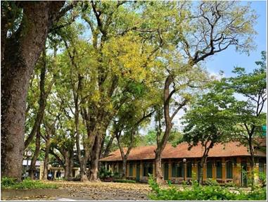

LAN TỎA HÀNH ĐỘNG ĐẸP TRONG CÔNG TÁC PHÒNG, CHỐNG DỊCH COVID – 19 QUẬN TÂY HỒ
Bước vào tháng 5- tháng của cái nắng đầu hè oi ả, tháng của hoa phượng nở rực rỡ, tiếng ve cất bên sân trường báo hiệu một năm học sắp sửa kết thúc, tháng của cuộc chia ly, của những cô cậu học trò chia tay mái trường, chia tay thầy cô giáo, chia tay bạn bè và chia tay tiếng trống trường vang lên mỗi ngày.
Nhưng mùa hè năm nay thật khác, một năm học đặc biệt do ảnh hưởng của đại dịch COVID- 19 đã làm cho chúng tôi, những chị em của tổ Ngoại Ngữ trường THPT Chu Văn An đang phải trải qua những thời đoạn khác thường chưa từng xảy ra trong quãng đời hoạt động chuyên môn.

Trạm y tế phường Thụy Khuê
Không thể đóng góp trực tiếp sức mình vào công tác chống dịch như các nhân viên y tế tuyến đầu, nhưng chúng tôi nhận thức được rằng, những cố gắng của chúng tôi từ việc hoàn thiện các công tác chuyên môn dù chỉ “Ở tại chỗ” theo yêu cầu của Chính phủ, đến hoàn thiện bản thân và chăm sóc gia đình cũng là những đóng góp có ý nghĩa nhất định vào công cuộc chống lại dịch COVID 19.
Không chỉ nỗ lực trong công tác chuyên môn, chị em chúng tôi cũng cố gắng lan tỏa ý thức phòng chống dịch cho người thân, bạn bè, tổ dân phố và cộng đồng. Trong chúng tôi có người tham gia công tác thiện nguyện, người thì đóng góp công sức vào việc bảo vệ vùng xanh vùng đỏ, hay đơn giản chỉ đảm đang vai trò nội trợ, sáng tạo ra những món ăn hay động viên những thành viên gia đình mình trong những ngày giãn cách.
Năm học mới sắp đến, những chương trình mới, tài liệu mới được chị em chúng tôi đón nhận, nhanh chóng tiếp thu và soạn giáo án, bài giảng online. Dù không gặp gỡ trực tiếp nhưng chị em chúng tôi còn kết nối chặt chẽ và phối hợp nhịp nhàng hơn trên mạng. Dường như khó khăn không làm cản bước và càng không thể làm mất đi nhiệt huyết giảng dạy trong trái tim những nhà giáo Hà nội chúng tôi. Tinh thần này sẽ theo chúng tôi đi vào năm học mới và chuyển tải đến các em học sinh.
Trong tình hình dịch bệnh COVID-19 ngày càng lan rộng và diễn biến phức tạp, việc dạy và học online được xem là giải pháp tình thế cho ngành giáo dục cả nước. Việc dạy và học online mở ra nhiều cơ hội nhưng cũng mang lại không ít thách thức cho cô trò cả nước. Dù biết rằng đó chỉ là giải pháp tạm thời với nhiều bất tiện, nhất là với các em học sinh. Nhưng đây cũng là giải pháp tốt nhất hiện nay để mỗi người được an toàn trong mùa dịch, cả gia đình an toàn, cộng đồng an toàn và đất nước an toàn. Mỗi quốc gia an toàn là thế giới an toàn. Chúng tôi cũng truyền đạt tới các em tinh thần đó, với trách nhiệm công dân của mỗi người. Mỗi bài giảng, mỗi trang giáo án với chúng tôi giờ đây không chỉ là nghĩa vụ chuyên môn, mà còn là những cân nhắc trăn trở thiết kế bài học, sao cho các con quên đi nỗi vất vả hàng ngày học bài qua mạng mà không được gặp bạn bè, thầy cô thân yêu của mình cùng những hoạt động thể chất bổ ích.
Cô trò cũng ấm lòng khi biết rằng bên cạnh chúng tôi, các Lãnh đạo ngành của Thành phố, Quận và Ban giám hiệu nhà trường đã mang đến nguồn cổ vũ, động viên tinh thần, đoàn kết, tương thân tương ái cho toàn thể giáo viên chúng tôi, đem đến cho chúng tôi thêm sức mạnh và niềm tin. Ngày khai giảng đang đến, trời thu Hà nội nắng vàng rực rỡ và mái trường đang rộng cửa đón đợi. Một năm học mới với rất nhiều điều mới lạ và khó khăn thử thách, nhưng sẽ không thử thách nào mà thầy trò chúng tôi không vượt qua được. Nhìn nhau qua màn hình, chúng tôi thầm hẹn ngày gặp lại với ánh mắt động viên và quyết tâm chiến thắng đại dịch.
Hà Nội, thu 2021